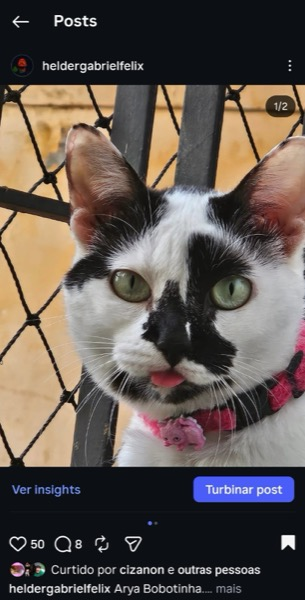
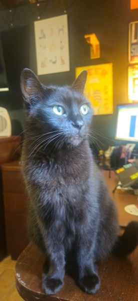
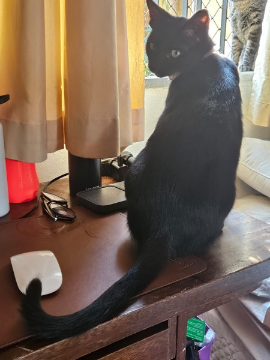
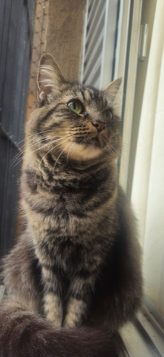
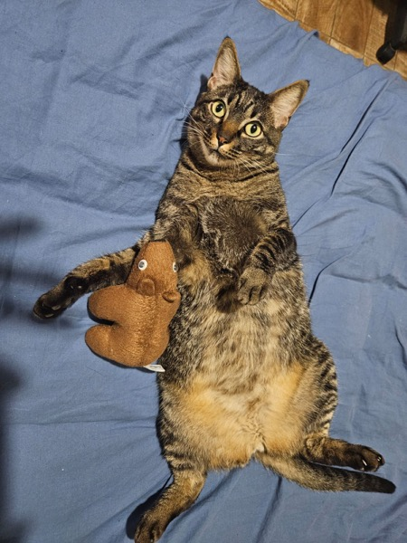
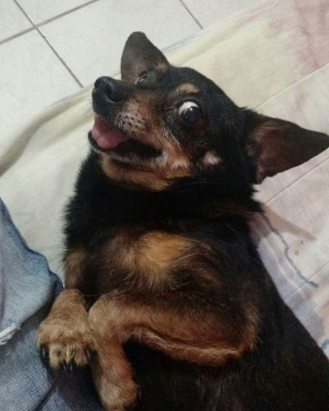

← haltkija.com.br
← haltkija.com.br

BRAND GUIDEBOOK
Por que existimos
Todo negócio tem um problema que parece grande demais para o tamanho dele. Uma planilha que ninguém confia. Um processo que só funciona porque alguém lembra. Um dado que existe em quatro lugares e não bate em nenhum.
Grandes empresas resolvem isso com times e orçamentos. As outras convivem com o problema até ele virar prejuízo — ou multa.
O HALTKIJA Studio existe para encurtar essa distância.
Tecnologia e IA para resolver o problema de verdade — não para impressionar em apresentação. Números conferidos, não estimados. Entrega que funciona sozinha depois que a gente sai.
E um jeito de trabalhar que a gente aprendeu com gato: observar primeiro, calcular o salto — e então acertar.
Missão, visão e valores
Resolver problemas reais de negócio com tecnologia e IA — com honestidade, precisão e velocidade.
VisãoQue o tamanho da empresa deixe de definir a qualidade dos sistemas que ela pode ter.
Honestidade antes do negócio
Dizer o que é, mesmo quando não favorece a venda. Se não vale a pena, a gente fala.
Resolver, não relatar
Entrega é sistema funcionando, não diagnóstico bonito do problema.
Precisão verificável
Todo número tem origem e pode ser conferido. Nada de "cerca de", "milhares de".
Rápido, sem correria
Aprender e entregar rápido é uma vantagem. Atropelar o cliente não é.
Generosidade
Sempre há espaço para ajudar quem não poderia pagar. Isso não é exceção — é parte do trabalho.
HALTKIJA é uma família
O nome não veio de branding: veio de casa. É a inicial de cada um que mora aqui — uma pessoa e cinco gatos, quatro deles resgatados da rua ou de ninhadas que precisaram de lugar.
Os nomes vêm de games e séries: Arya de Game of Thrones, Tifa de Final Fantasy VII, Lucca e Janus de Chrono Trigger — que aparece duas vezes, e não por acaso: é o jogo favorito da casa.

A
L
T
K
J
BBilly Billy veio antes de todos e ficou quinze anos. Toda casa que já teve um cachorro assim carrega ele pra sempre.
Como a marca fala
Português claro, frases curtas, confiança sem arrogância. Explica o difícil com calma e nunca usa hype ("revolucionário", "incrível!!!"). Números são sempre concretos e verificáveis.
- Precisa e concreta: "1.843 itens conferidos em quatro fontes" — não "milhares de dados processados"
- Serena: pontuação sóbria, sem exclamações em série, sem caps lock de ênfase
- Próxima: "você" direto, sem formalidade engessada — mas sem gíria forçada
- Hype e superlativo vazio: "o melhor", "único no mercado", "disruptivo"
- Jargão sem tradução: se usar termo técnico, explica em seguida
Uma voz, três públicos
O tom base não muda — o que muda é a profundidade técnica e o que se assume como sabido.
Cliente
Traduz o técnico para o impacto no negócio dele. Números concretos, próximo passo sempre explícito. Nunca deixa o cliente sem saber o que acontece agora.
"1.843 itens conferidos em quatro fontes — as 263 DIs do Termo de Fiscalização estão cobertas. Falta você validar 28 produtos novos."
Parceiro
Direto e horizontal. Pode usar o vocabulário da área sem traduzir tudo. Combina prazo e escopo com clareza, sem formalidade de contrato em cada frase.
"Consigo entregar a integração até quinta. Se o endpoint mudar, me avisa que eu ajusto."
Público
Mais autoral e reflexivo. Aqui cabe metáfora e uma frase bonita — desde que sustentada por trabalho real logo em seguida.
"Como todo gato: observa primeiro, calcula o salto — e então acerta."
O conceito
Brasão é o símbolo de uma família — e é exatamente isso que o nome carrega. O gato sentado, de perfil sereno, não está pulando: está observando. É a postura que define o jeito de trabalhar do estúdio, e é o retrato de quem mora em casa.
- Escudo: família, proteção, herança — o que se assina embaixo
- Gato sentado: cálculo antes da ação, precisão sem pressa
- Marfim dourado: ourivesaria, cuidado artesanal no acabamento
- Wordmark serifada: permanência — não é marca de moda
Como aplicar o logo
A versão oficial é a light (marfim dourado), feita para fundos escuros. O glow dourado é permitido e bem-vindo em telas.
X = a altura do escudo. Nenhum elemento, texto ou borda invade essa margem.
Abaixo de 44 px o gato perde definição. Para ícones e favicon, use apenas o
escudo (favicon.png) — nunca o logo inteiro reduzido.
Usos incorretos — nenhum destes é aceitável:
Convivência com outras marcas
Em proposta, entrega ou material conjunto, o logo do cliente vem à esquerda (posição de anfitrião) e o HALTKIJA à direita, separados por um fio dourado. Alturas ópticas equivalentes — nunca o nosso maior que o do cliente.
- Fundo neutro escuro quando houver dois logos — o universo só quando a peça for só nossa
- Se o logo do cliente for claro/colorido, manter o nosso em marfim dourado sobre fundo escuro
- Nunca sobrepor os dois logos, nem criar um "logo combinado"
- Nunca aplicar o glow dourado do nosso sobre a marca do cliente
Paleta
Base noturna quase preta, texto marfim, e o dourado como fio condutor — sempre como destaque, nunca como fundo de área grande. O gelo azulado entra só em detalhes finos.
Três vozes, três fontes
Cada fonte tem um papel fixo. Não trocar os papéis entre si e não introduzir uma quarta fonte.
As assinaturas da marca
Quatro elementos que fazem qualquer peça parecer HALTKIJA:
Linha dourada em gradiente + texto mono em caps espaçado. Abre toda seção, e-mail ou tela. É o "miado" da marca: discreto e inconfundível.
Painéis translúcidos com blur e borda em gradiente (branco → ouro → gelo). Este card é um exemplo vivo.
background: linear-gradient(150deg, rgba(255,255,255,.10), rgba(255,255,255,.05)); backdrop-filter: blur(20px) saturate(160%); borda: gradiente branco→ouro→gelo (1px)
Via láctea (milkyway.webp) com drift lento de 130s,
vinheta escura (scrim) e grain de 4,5%. Em e-mail: versão estática (clientes de e-mail não animam).
Que imagem é HALTKIJA
A imagem de marca é escura, profunda e silenciosa. Céu, espaço, texturas naturais — nada de banco de imagens com pessoas sorrindo apontando para gráficos.
- Escuro predominante, com um ponto de luz quente
- Espaço, céu noturno, texturas orgânicas, gatos
- Sempre com scrim escuro por cima para o texto respirar
- Stock corporativo: aperto de mão, reunião genérica, seta subindo
- Fundo branco estourado ou cores saturadas dominando
- Filtro colorido que brigue com o dourado
Onde a marca vive
- Site (haltkija.com.br): universo animado, hero com logo flutuando, glass em tudo
- CRM: mesmo sistema; dourado nos valores, funcionais verde/vermelho nos status
- E-mail: universo estático de fundo, card glass rgba(4,6,12,.58) com borda ouro, botão dourado, Georgia como fallback da Fraunces
- Assinatura: assinatura.gif + ícone dourado (arquivos servidos pelo site — não remover do repo)
- Nunca fundo branco ou colorido chapado em peça da marca
- Nunca dourado como cor de fundo de área grande — ele é fio, não tecido